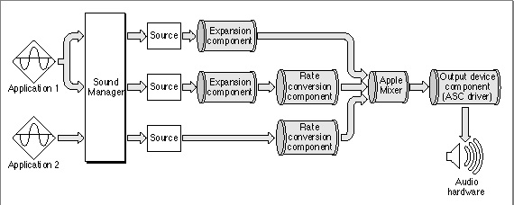
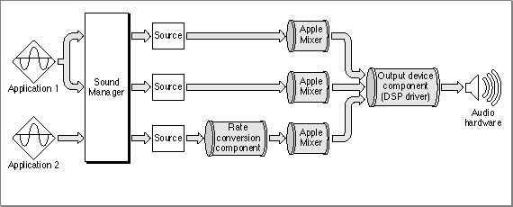

The Apple Mixer
As you've seen, most sound components take a single source of audio data and modify it in some way, thereby producing a single output stream of audio data. There is one special sound component, known as the Apple Mixer component (or, more briefly, the Apple Mixer), that is able to handle more than one input data stream. Its function is precisely to mix together all open channels of sound data into a single output stream, as shown in Figure 5-3.Figure 5-3 Mixing multiple channels of sound

The Apple Mixer has a more general function also, namely to construct the sound component chain required to process audio data from a given sound source into a format that can be handled by a particular sound output device. The Apple Mixer always feeds its output directly to the sound output device component, which sends the data to its associated audio hardware. After creating the component chain, the Apple Mixer assigns it a source ID, a 4-byte token that provides a unique reference to the component chain. The Apple Mixer is actually created by the sound output device component, when that component calls the Sound Manager's
OpenMixerSoundComponentfunction.In addition to creating sound component chains and mixing their data, the Apple Mixer can control the volume and stereo panning of a particular sound channel. Some sound output devices might be able to provide these capabilities as well. Indeed, some sound output devices might even be able to mix the data in multiple sound channels. In those cases, the sound output device component can call the
OpenMixerSoundComponentfunction once for each sound source it wants to manage. The result is a separate instance of the Apple Mixer for each sound source, as shown in Figure 5-4.Figure 5-4 A sound output device component that can mix sound channels

The sound output device component can instruct each instance of the Apple Mixer to pass all the sound data through unprocessed, thereby allowing the output device to perform the necessary processing and mixing. In this case, the Apple Mixer consumes virtually no processing time. The Apple Mixer must, however, still be present to set up the sound component chain and to assign a source ID to each sound source.